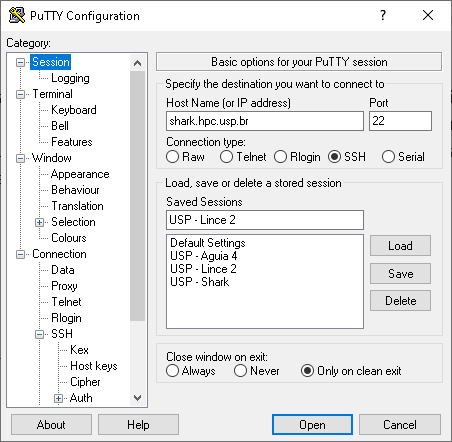
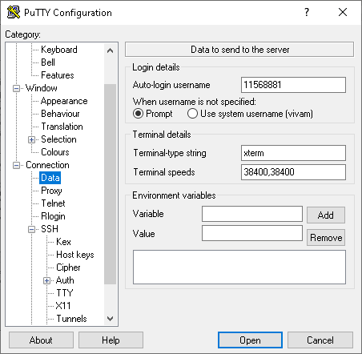
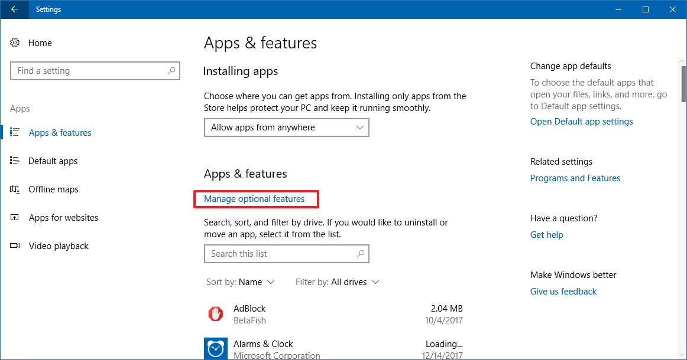
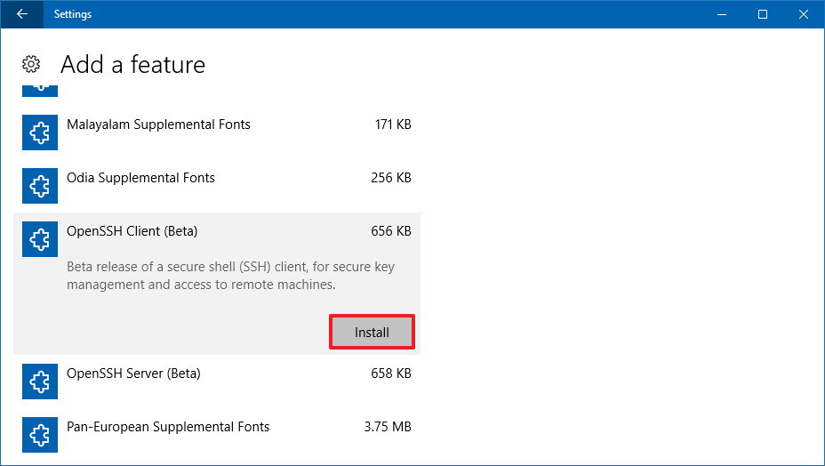
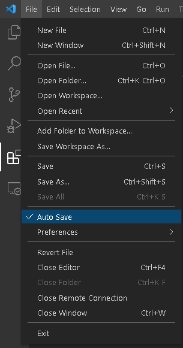

Client configuration¶
This section shows how to configure a development environment in your computer and how to connect to the servers. The instructions are for Microsoft Windows 10 and minor changes may be required for other operating systems.
Cluster access is done using command line interface (CLI) via SSH. PuTTY is a free terminal for remote access. This section shows how to setup PuTTY to connect and create a tunnel for file transfer and remote code execution.
PuTTY Configuration¶
Download PuTTY from the developer’s website and install in your computer. After installation, open PuTTY:
In the Connection->Data menu, insert your user name (USP number). This avoids PuTTY asking for this on each login.
PuTTY allows to connect directly in lince or aguia after connecting to shark. Just add the command ssh lince2 in the Remote command field.
You may create a tunnel from your computer directly to aguia or lince for file transfer or to use Jupyter Notebook. Insert a local port and the port number of the server you will access. For instance, the image below assigns local port 2022 to port 22 in lince2. Port 22 is use for ssh connection and file transfer via sftp. So, to transfer files just use this command:
$ sftp -P 2022 user@localhost
Port settings suggestion:
Server |
Local port |
Remote port |
Service |
|---|---|---|---|
lince2 |
2022 |
22 |
SSH and SFTP |
lince2 |
2888 |
8888 |
Jupyter Lab and Jupyter Notebook |
aguia4 |
4022 |
22 |
SSH and SFTP |
aguia4 |
4088 |
8888 |
Jupyter Lab and Jupyter Notebook |
SSH Configuration¶
SSH uses login and password for authentication, or a pair of public and private keys. The latter case you can connect directly to the server without entering the password.
Create a pair of public and private keys in your computer to connect to aguia and lince while the tunnel is open. There’s no need to enter the passphrase, just the default values:
C:\Users\vivam>ssh-keygen
Generating public/private rsa key pair.
Enter file in which to save the key (C:\Users\vivam/.ssh/id_rsa):
Enter passphrase (empty for no passphrase):
Enter same passphrase again:
Your identification has been saved in C:\Users\vivam/.ssh/id_rsa.
Your public key has been saved in C:\Users\vivam/.ssh/id_rsa.pub.
The key fingerprint is:
SHA256:jRAhGYfJkD9Zj4ew97SCLImf98m5FiJdhlnKwbK06Jg vivam@DESKTOP-TAO705M
The key's randomart image is:
+---[RSA 2048]----+
| +=o=+* |
| + *oo. |
| o * @.+ |
|. O . *.+o |
|oo + * +S.. |
|E.+ = o o |
| . + . o |
| + .+.o |
| . .*. |
+----[SHA256]-----+
C:\Users\vivam>
The key pair is saved in folder .ssh:
C:\Users\vivam>dir .ssh
O volume na unidade C é OS
O Número de Série do Volume é 963B-B7F6
Pasta de C:\Users\vivam\.ssh
03/04/2021 23:06 <DIR> .
03/04/2021 23:06 <DIR> ..
03/04/2021 23:06 1,679 id_rsa
03/04/2021 23:06 404 id_rsa.pub
2 arquivo(s) 2,083 bytes
2 pasta(s) 8,864,555,008 bytes disponíveis
C:\Users\vivam>
The next step is to append the public key content to the file ~/.ssh/authorized_keys in aguia and lince:
C:\Users\vivam\.ssh>cat id_rsa.pub
ssh-rsa AAAAB3NzaC1yc2EAAAADAQABAAABAQDKdaBWyChrn7wsR6+SolgFV8cPxR3hBdPTjGJgI5prPH25vK6XqSvXq8+mDvdXlBI2w9MQKLNw/ELu1n2vTFzJIcmAPY1qk8DsynQYU4CzD5+VVh+sMmVrzLUTTZ+3rC3gWWoMSWqn3IwFNiUsHgQhn6HqIzWhaUVyMF62e3YClfSEnc5t5bkaupAgwP4vNWCfdbNjV/qbUyQoflsd5I/9BgMLj1Tcz+b/SXT866aI5JPmIu9yKZH2b1u/ZMtFEtydG9UlCxk+Deptlxryi2fIe9wFQuBq1CwZkh0Ikt93SOceksuK6ReW+pJwcocu2MzznCZMAgTiNVvGQAhQxFY7 vivam@DESKTOP-TAO705M
C:\Users\vivam\.ssh>
Test the conection¶
Open a terminal window and test the connection with SFTP:
(base) C:\Users\vivam>sftp -P 2022 11568881@localhost
Connected to 11568881@localhost.
sftp> pwd
Remote working directory: /scratch/11568881
sftp>
Running remote code¶
Editing and debugging code in a Linux terminal is not as efficient as in an IDE or in Jupyter. The PyCharm Professional edition allows remote execution via SSH and won’t be discussed here because it’s a paid version. Microsoft Visual Studio Code (VS Code) extension Remote - SSH also do the job. VS Code requires OpenSSH, so we’ll install this first.
Install OpenSSH¶
The Remote - SSH extension uses OpenSSH; the PuTTY version is not supported.
In Windows 10 settings, open the windows Applications and Resources, then click in Optional Resources and check wether OpenSSH Client is installed. If it isn’t, click in + Add resource to install.
Open Settings, then go to Apps and click Apps & features. Under “Apps & features,” click the Manage optional features link.
Click the Add a feature button, select the OpenSSH Client option and click Install.
SSH configuration¶
Create the ssh_config file in your Windows user’s .ssh folder with this content:
(base) C:\Users\vivam\.ssh>cat config
# Read more about SSH config files: https://linux.die.net/man/5/ssh_config
Host lince2
HostName localhost
User <YOUR NUSP>
IdentityFile ~/.ssh/id_rsa
Port 2022
Host aguia4
HostName localhost
User <YOUR NUSP>
IdentityFile ~/.ssh/id_rsa
Port 4022
User is your USP number (NUSP) used to login into the servers and Port is the SSH tunnel port.
VS Code configuration¶
Install VS Code and the following extensions:
With the Jupyter extension you can edit and execute notebooks in interactive mode, which is handy to make small tests and debugging.
The Python Extension Pack allows you to run small chunks of code like in Jupyter. It also shows charts and images in a side bar window. Just insert #%% in a new line to convert the code below in a Jupyter cell, as shown in the image below.
Prevent data loss while editing code enabling Auto Save:
Test the connection¶
See details at https://code.visualstudio.com/docs/remote/ssh-tutorial
File transfer with SFTP¶
SFTP usage:
C:\>sftp
usage: sftp [-46aCfpqrv] [-B buffer_size] [-b batchfile] [-c cipher]
[-D sftp_server_path] [-F ssh_config] [-i identity_file] [-l limit]
[-o ssh_option] [-P port] [-R num_requests] [-S program]
[-s subsystem | sftp_server] destination
SFTP commands:
sftp> help
Available commands:
bye Quit sftp
cd path Change remote directory to 'path'
chgrp grp path Change group of file 'path' to 'grp'
chmod mode path Change permissions of file 'path' to 'mode'
chown own path Change owner of file 'path' to 'own'
df [-hi] [path] Display statistics for current directory or
filesystem containing 'path'
exit Quit sftp
get [-afPpRr] remote [local] Download file
reget [-fPpRr] remote [local] Resume download file
reput [-fPpRr] [local] remote Resume upload file
help Display this help text
lcd path Change local directory to 'path'
lls [ls-options [path]] Display local directory listing
lmkdir path Create local directory
ln [-s] oldpath newpath Link remote file (-s for symlink)
lpwd Print local working directory
ls [-1afhlnrSt] [path] Display remote directory listing
lumask umask Set local umask to 'umask'
mkdir path Create remote directory
progress Toggle display of progress meter
put [-afPpRr] local [remote] Upload file
pwd Display remote working directory
quit Quit sftp
rename oldpath newpath Rename remote file
rm path Delete remote file
rmdir path Remove remote directory
symlink oldpath newpath Symlink remote file
version Show SFTP version
!command Execute 'command' in local shell
! Escape to local shell
? Synonym for help
sftp>